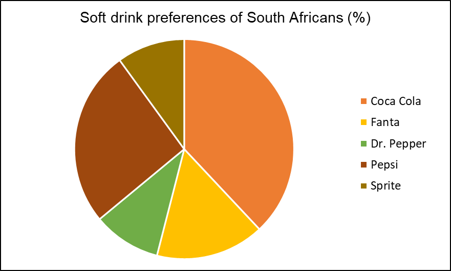

1.6 Data visualization – Foundations and Concepts
According to the Harvard Business Review, data visualization is a must-have data literacy skill for junior and even senior management. This is because it provides the only way for them to make sense of the work they do. As the world becomes more complex, most problems are increasingly hard to understand, much less fix, if they cannot be visualized. In modern society, organizations and individuals can use data visualization to generate and illustrate ideas or discover patterns, trends and outliers in the data.
Data visualization is the graphical representation of data using charts, graphs, maps, animations and infographics. The goal of visualizing data is to clearly and effectively communicate the key characteristics of a data set in a way that is easy to understand.
1.6.1 Common uses of data visualization in modern society
Comparison and benchmarking – visualizing data can allow us to compare observations, variables or time periods. For instance, a meteorologist might want to compare the amount of rainfall before and after the first industrial revolution.
Monitoring and tracking – Data dashboards (such as Tableau® and Microsoft’s Power BI) can be used to monitor key performance indicators (KPIs) in a company or organization in a manner that is easy to read, understand and interpret. For instance, in order for the manager of a local Shoprite store to ensure enough merchandise on hand, the manager can refer to a real-time data dashboard showing the hourly sales volumes, inventory on hand, hourly number of transactions processed.
Data exploration – as already mentioned in Section 1.5, data visualization is a core step in EDA.
Hypothesis testing – results from visualizing data can be used as an informal approach to formulate and test hypotheses. For instance, the plot in the figure below can lead us to hypothesize that there is a positive linear relationship between the volumes of electric vehicle sales (in R millions) and the number of television advertisements.
Figure 1.6: Scatter plot of electric vehicle sales (in R millions) and the number of advertisements
- Educational and knowledge sharing – visualizations can simplify complex topics and make information more easily accessible to the general public in order to support education and training.
1.6.2 Types of data visualizations
The choice of a data visualization tool depends on the purpose of the study and the type of data available.
For the purpose of visualizing the distribution of the data, we can make use of a
Frequency distribution – show the number of observations in each of several non-overlapping categories or classes for both numerical and categorical data.
Bar chart – to show the frequency distribution for a categorical variable.
Pie chart – to show the relative frequency distribution for a categorical variable.
Dot plot – to show the distribution of a numerical variable over the entire range of the data.
Histogram – to show the frequency distribution of a numerical variable over a set of class intervals.
Stem-and-Leaf – to show the rank order and shape of the distribution of numerical data.
Box-and-Whisker plot – to show the distribution of numerical data using five numbers calculated from the data.
For the purpose of identifying whether or not the data has a trend overtime, we make use of a
- Line chart which can be used to visualize time series data.
For the purpose of making comparisons between two or more variables in a data set, we can make us of a
Multiple boxplots – to compare the distributions of two or more numerical variables.
Side-by-side or stacked bar charts – to compare two categorical variables.
Pivot-tables (crosstabulation) – to compare the frequency distribution of two categorical distributions.
For the purpose of describing the relationship between numerical variables we can make use of
- Scatter plots to (1) represent the relationship between two numerical variables, (2) identify the type of pattern represented in the scatter plot (linear constant upward or downward trend, curved pattern or no apparent pattern at all); (3), if there is a pattern, determine how strong is the pattern (do all the points follow the pattern exactly or not? In Section 1.7, we will define a numerical measure that can quantify the strength of a linear pattern) and (4) identify if there are any unusual observations (points that are far from the cluster of the majority of the points).
For the purpose of displaying geographical data, we can make use of
Heat map – to show the intensity or density of a variable across a geographical area using a color gradient. These maps are effective for visualizing, for instance, crime hotspots.
Flow map – to show the direction and magnitude of the movement, migration or flow of people, goods or information between different locations.
Choropleth map – to represent quantitative or qualitative data associated with geographic regions such as countries. In contrast to a heat map, in a choropleth map, the geographic regions are not based on the variable of interest but are chosen based on known spatial information. These maps are effective for visualizing data on, for instance, population density or income levels.
Cartograms – to show the relative influence or importance of different geographical regions based on some quantitative variable such as population size. These visual tools work by distorting the size of the geographical regions by making them proportional to the numerical value of the variable of interest. For instance, geographic regions with larger population sizes will be larger on the map.
Point maps – to show the location of a specific outcome, such as the site of a wildfire, on the map.
Bubble maps – to show the relative magnitude of a specific outcome, such as the impact of a wildfire at a specific location, on the map. The larger the bubble, the higher the impact.
1.6.3 Components of a data visualization tool
In order for a visual summary to effectively communicate the message behind the data, it must possess the following core features:
An appropriate descriptive title that explains the data being shown.
Clear labels with the units of measurements and appropriate scales for both the x-axis (horizontal) and y-axis (vertical).
A legend identifying the different data series, where appropriate.
The figure below shows a graph of the 14-day Covid-19 infection rate in the South Africa provinces of Gauteng and Kwa-Zulu Natal for the period 1 December 2020 to 28 February 2021.
Figure 1.7: The 14-day Covid-19 infection rate in the South African provinces of Gauteng and Kwa-Zulu Natal for the period 1 December 2020 to 28 February 2021
Figure 1.8 is a copy of Figure 1.7 highlighting the core features of a graph.
Figure 1.8: Same as Figure 1.7
1.6.4 Advantages and Disadvantages of data visualization
Data visualization can be an advantageous skill to have because
it appeals to any audience which means you can communicate the data to anyone;
it allows you to communicate efficiently and effectively about data;
quickly detect patterns or anomalies in the data;
it facilitates timely decision-making;
While there are many obvious advantages to data visualization, there are also some less obvious disadvantages to data visualization such as:
using the wrong visualization tool;
concluding from a scatter plot that the observed correlation implies causation;
making biased conclusions.
Due to their ease of apprehension, they can often be used to spread misinformation.
1.6.5 Exercises to Section 1.6
Question 1
What is data visualization?
Question 2
For each of the following scenarios, specify the appropriate visualization technique (s):
The City of Tshwane is concerned about income inequality, the mayor wants to investigate the distribution of income.
In an effort to efficiently allocate police personnel, the City of Johannesburg wants to know which areas have the most criminal incidents.
The forestry, fisheries and the environment ministry of South Africa wants to compare the greenhouse gas emissions across industries in the primary, secondary and tertiary sector.
The Western Cape province has noted an increase in the number of people from other parts of South Africa, the administration wants to know what is the province of origin for most of the migrants?
A botanist wants to understand the effect of temperature on the rate of growth of a plant.
Question 3
For each of the following scenarios, specify whether or not the chosen visualization technique is appropriate, if not, state the reason and specify an appropriate technique:
A financial analyst uses a pie chart to identify the trend in the rand-dollar exchange rate for the period 2000-2020.
A psychologist uses a box-and-whisker diagram to identify outliers in terms of IQ.
A zoologist uses a line chart to compare the territory sizes between male tigers and female tigers.
A sociologist uses a bar chart to study the relationship between an individual’s years of education and their voting frequency.
Question 4
The following is a pie chart of the soft-drink preferences of 50 individuals in South Africa:

Identify what is wrong with the above visualization.